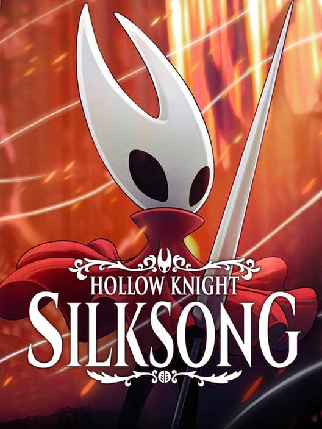
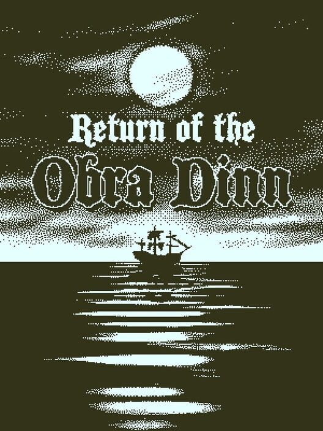
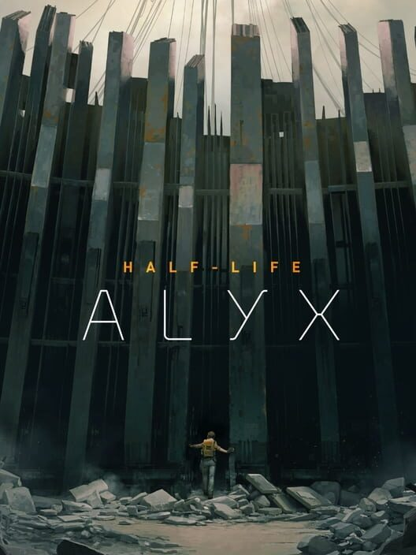
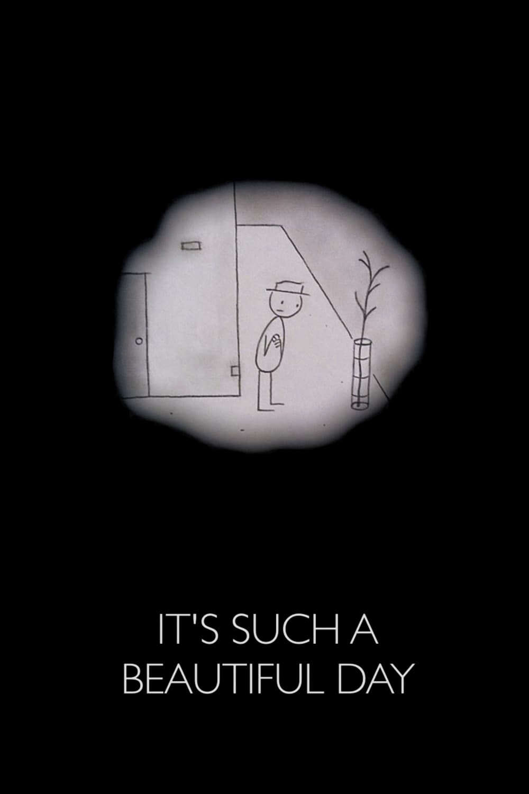
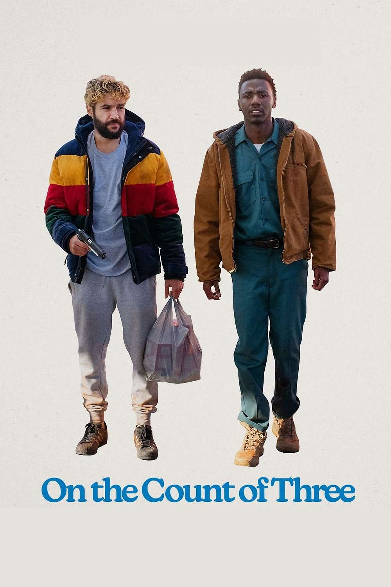
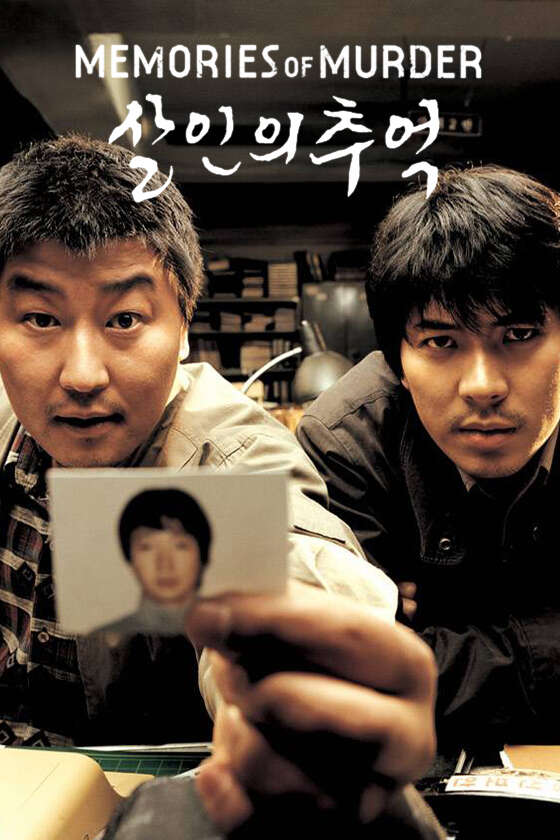

Me outside of work
Video Games
To everyone's surprise reading this - a game developer enjoys playing video games??
With media in general I find that I don't tend to enjoy re-consuming the same piece of media, and that definitely applies to video games for me. I have found that the way I enjoy games the most is to always be playing new games that interest me. I much prefer one-off 8-hour experiences to the kinds of games that aim to consume all of your time. Recently that has meant going through all the retro game series I missed as a kid due to not owning a playstation or xbox. Some recent examples would be the metal gear solid, halo, and uncharted franchises. I really enjoy finally getting to play the series I heard so much about growing up, especially on original hardware which I now finally have access to!
Top 3 Video Games

Just an absolutely incredible experience start to finish. So much charm and love, a world that is a joy to explore, and just a really good level of difficulty for me. I don't 100% games often, but I had to 100% complete Silksong. My only complaint is that Act III felt a little weak compared to the other two, but that's more just because the other two acts were incredible.

I love my puzzle games, and I think Obra Dinn is the best puzzle game out there. There aren't many games that are just one giant puzzle start to finish, and this absolutely nails it. The feeling of seeing the same guy constantly from scene to scene but having nothing to go on for his name, and then finally spotting something that makes everything fall into place is one of the best feelings out there. Not to mention that the story as a whole is really cool, and the set-pieces are gorgeous.

Half-Life Alyx is the game that convinced me that VR is not a gimmick. It has the kind of immersion that genuinely has you forgetting you are in VR despite not even having arms. I genuinely think the chapter with Jeff might be the single best section of any video game ever, and one that I don't think I will ever forget. 10/10, this was my Half-Life 3.
You can go and take a look at all of my other hot takes here on my Backloggd
Films
I haven't been watching as many films recently as I would like to, but I would still consider myself a film enthusiast. Just something about sitting down with a bowl of popcorn (salt + smoked paprika) infront of a TV with all the lights off in your house and just enjoying the show. I don't know that I have a favourite director, but Bong Joon Ho has to be up there.
Top 3 Films

Somehow Don Hertzfeldt has created one of the funniest, most heartbreaking, and most existential films I have ever seen and the main character is effectively a sick man. Just such a wonderful and meaningful film that explores the meaning of life for someone with severe mental disabilities in such a genuine and charming way.

An incredibly depressing premise that in reality is a very true-to-life deep dive into mens mental health, depression, and societal pressures. The two leads are incredible and the ending is the most I have ever cried watching a film. It deals with some incredibly heavy topics, but does so better than any other film I have seen. If it weren't for how hard a watch it was I would recommend it to everyone.

After watching Parasite I knew I had to go back through Bong Joon Ho's repertoire. I wasn't expecting it, but of all of his films Memories of Murder stuck in my head and just really worked for me. It's hard to talk about without spoilers, and I don't know if I can really put into words exactly how I feel about it anyway, but it was just a fascinating film and I absolutely love the way the two protagonists mirror each other throughout the entire runtime.
Similarly to video games, I quite enjoy rating all the films I watch, so go check out my Letterboxd here